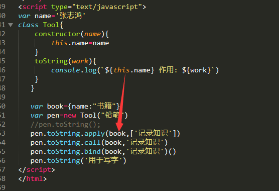

Applly 方法用于劫持另一个对象的方法，继承另一个对象的属性
pen.toString.apply(book,['记录知识'])
book对象劫持了pen对象的toString方法。这样book对象就不用去new一个了
book替换了pen 原型（父类）的this。
pen.toString.apply(book,['记录知识'])
book对象劫持了pen对象的toString方法。这样book对象就不用去new一个了
book替换了pen 原型（父类）的this。
apply 和 call 和 bind 都是用来重新定义this这个对象的
区别在于调用时不同：
1/通过call()调用函数时,必须在括号中详细地列出每个参数.
2/通过apply()动态地调用函数时,需要以数组形式一次性传入所有调用参数.
1/通过call()调用函数时,必须在括号中详细地列出每个参数.
2/通过apply()动态地调用函数时,需要以数组形式一次性传入所有调用参数.
pen.toString.apply(book,['记录知识']) --第二个参数为数组
pen.toString.call(book,'记录知识') --第..个参数为字符
pen.toString.bind(book,'记录知识')() --参数同 call，只是后面需要加括号调用

pen.toString.call(book,'记录知识') --第..个参数为字符
pen.toString.bind(book,'记录知识')() --参数同 call，只是后面需要加括号调用